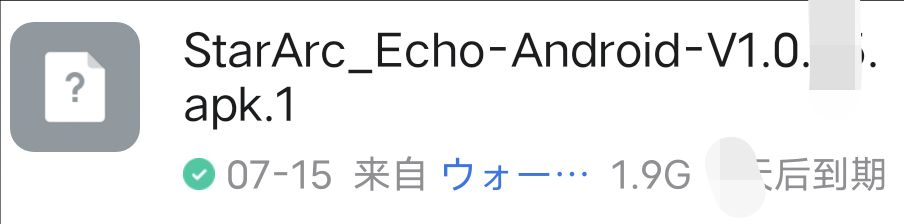

如何下载:
电脑版:
下载steam,在steam上购买或使用激活码激活并安装.
电脑版steam下载(点击跳转)电脑版第一次进游戏时一定要选择跨平台并绑定epic账号,这样就可以在手机上用epic账号登录,电脑手机数据互通.
手机版:
方法一(推荐):
官方群点击右上角三个杠,下滑找到文件,找到名为StarArc_Echo-Android-V1.0.XX.apk.1(如下图)的并下载.下载完成后点击并选择"其他应用打开",然后选择自己手机默认的浏览器.如果默认浏览器不能识别那么去自己手机的应用商店下载qq浏览器(通过qq下载的qq浏览器解析包有问题,所以去应用商店),下载并安装好qq浏览器后返回群里,点击下载好的文件,选择用其他应用打开,选择qq浏览器(为什么我的叫万能阅读器?),检测为安装包,安装即可.

群文件的安装包
方法二(麻烦,不实时):
下载国际版taptap并下载国际版星源遗境(和群文件安装包一样),(需要用到梯子)(如果你不知道什么是梯子那么请使用方法一)
登录:
epic登录界面
进入下载好的星源,点击登录,会自动跳转到浏览器的epic登录界面,有epic账号就登录,没账号点击下方的创建账号,可以使用qq账号注册(你qq号后面加上@qq.com)(年龄填大于18?!),小窗qq接收验证码,完成注册.然后登录.
- 当前安装包最新版本1.0.25,进入游戏需要更新重启好几次,并且会卡在100%(其实没卡,继续等一段时间),直到更新到1.0.30版本